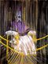

پذيرش > مقالات > خارج از چارچوب > هنر همانقدر که سکوت است، فریاد است
 کمپین و هنر اعتراضی کمپین و هنر اعتراضی

 هنر همانقدر که سکوت است، فریاد است هنر همانقدر که سکوت است، فریاد است
19 آبان 1387 - سیاوش خدایی - نسخه قابل چاپ
1
هنر می خواهد از واقعیت –که شدیداً وساطت شونده است- فرا رود. می خواهد به ذات واقعیت، به حقیقت امر واقع دست یازد. هنر بیان "عین" امر واقع نیست. حقیقتِ واقعیت، ذات بی واسطه آن است. بدین صورت هنر از واقعیت گذر کرده و بی واسطه میشود. هنر وساطت نمیشود؛ او عریان است. لباسی به تن ندارد. بنابراین او ورای معناست. فراتر از مفهوم و فرم است. هنر، خودِ بی واسطه ذات است. سکوت فریاد، و فریاد سکوتِ همپیوندی عینیت واقعیت، دهنیت آن و ذاتیت واقعیت است. همپیوندی که نامی ندارد؛ نه عینیت است و نه ذهنیت. هنر یک به ظاهر بیان، ورای صورت است. بنابراین هنر زائده ای که صورتهای واقعیت را بنمایاند نیست. فریاد "پاپ معصوم" فرانسیس بیکن، سکوت طبیعت های مونه است. او زینت گوشه دکوراسیون منازل ما نیست. حقیقتِ انسانیتِ انسان است. تحقق بی ریای درون انسان است. فریادهای نهفته در وساطت است. سکوت، نهفته در اوست. فریاد بی صدای مایکل کورلئونه است.
2
هنرمند برای "انتقال" از بیان استفاده می کند. پست مدرنیسم، بی چارچوبی اش را و بی قاعدگی اش را همین اینکه می خواهد بیان کند –بنا به ضعف زبان- قاعده مند می کند. هنرمند بی بیان یا با بیان، ذات واقعیت را می شکافد. هم اینکه می خواهد آنرا بروز دهد، از بیان استفاده می کند. هنر در مغز و قلب هنرمند نیست. در ناکجا آبادی از درون اوست که وقتی بیان میشود، به ناچار این بیان مضمون آن خوانده میشود. غافل از اینکه بیان -که صورت آنچیزی است که می خواهد بروز کند- هنر نیست. هنر در خطوط، در نت ها، در گچ و تصویر نیست. در پس پشت آنهاست و آنجا جریان دارد. ذهن مغشوش ون گوگ نعره موسیقی امروز است. "بیان" ضعف زبانی هنر است. ضعف بروز آن است. هنر ورای بیان جریان دارد. می خواهد بیان را شکافته و از آن فرا رود. می خواهد بیان کند. رنگ ها و ترکیب بندی های آن فی نفسه هنر نیست. هر همنشینی رنگی هنر نیست. رنگ بیان هنر مند است. وسیله اوست. حصار ناگزیر اوست. عشقی اجباری برای اوست. می خواهد بیان را بشکند و در ورای وساطت ها- رنگها، نتها و گِل ها- جای گیرد. صدای شاملو یک آواست. آوای او حصر اوست. شاملو به هر زبانی شاملو است. همانطور که خارجیان بیگانه با زبان شجریان، بی آنکه بدانند چه می گوید، پس پشت حصار او را می جویند. بیان، حصار ناگزیر هنرمند است. هنر ناگزیر از صورت یابی، صورت می یابد.
3
هنر می خواهد از فرد گذر کند. می خواهد از صورت واقعیت اجتماع فرا رود. واقعیتهای وساطت شونده را دور زده و آنرا نمایان کند. از این جنبه هنر ابتذال ندارد. آنچه ابتذال دارد، واقعیت یا ذات آن است. بنابراین هنر یک تجمل نیست؛ جنگ و آشوب درونی هنرمند است. اعلام جنگ بر علیه وساطت های واقعیت اجتماعی است. هنر، مبارزه با مناسبات اجتماعی است. هنر از خویشتن خویش که در آن عرضه میشود و آنرا در بیانش می یابیم، فرا گذشته و بدین سان از خود، گذر می کند: از این جنبه هنر یک خطر است؛ نه برای توده ها؛ بلکه برای دشمن توده ها.
4
هنر بیان نیست؛ بیان وسیله اوست. هدف ذات واقعیت است. گاهی در یک نت، گاهی در پیکر عریان یک زن و انحنای سینه او و دگر با در سکوتی که فریاد است. همپیوندی وسیله و هدف، اصالت هنرمند است. هنرمند با استفاده از بیان خود و دریافتش که انعکاس حقیقت در ذهن اوست، اصالت می یابد. اصالت هنرمند در خاص بودگی همپیوند اوست. هنرمند محصول دریافت است. هنرمند، "شدن" را به تصویر نمی کشد. چرا که او لحظه نیست. ثبت یک شدن را بیان می کند. او شدن را عریان به نمایش می گذارد: هنر خودِ هستی است و هنرمند وظیفه انتقال آنرا به عهده دارد. هنرمند شدن است و نه هنر. هنر ورای تاریخ است. در درون تاریخ است، با آن زاده میشود، اما تاریخ یا بیان آن نیست. اثر هنری زمانی میمیرد که تاثیر گذاری اش را از دست دهد؛ و با زنده شدن دوباره اثر گذاری اش، دوباره زنده می شود. هنر عنصری از عناصر سازمانی نیست که با فروپاشی آن، کهنه شده و بمیرد. او انعکاس آگاهی اجتماعی است. انعکاس تاریخ انسان و انسان تاریخی است؛ اما در ورای آن جای دارد. هنرمند هنر را در لحظه می بیند و در زمان به تصویر می کشد: شدنِ ورای زمان؛ شدنِ ناشدنی و بودنِ ورای هستی تغییر پذیر. از این جنبه هنر زمان ندارد. هنرمند خود را در جهان فرافکنی می کند. توضیحی برای بیانش ندارد. احتمالاً نمی داند که اثرش چیست، چه چیزی را می گوید و چرا اینگونه عریان بیان می کند: عریان نمایی هنرمند بی توضیح است. برای بیانش، بیانی ندارد.
5
هنر کپی ای از واقعیت نیست. صورت به انسان عرضه میشود. با این نگاه هنر زائد و اصولاً نیازی به بودنش، مگر به عنوان تفنن، زینت یا تجمل نیست. هنر در جهان ازخودبیگانه چگونه از بیگانگی فرا رفته و به حوزه آزادی (آفرینش) قدم میگذارد؟ کار مادی انسان که در این جهان در حوزه ضرورتها قرار گرفته چه خط مرزی با هنر در جهان ازخوبیگانه دارد؟ کار در حوزه ضرورتهاست عملی است که بر تمام هستی انسان سایه افکنده و در آن رسوخ می کند و او را از دنیای حیوانی اش جدا می کند. اما هنر امروز، مرز هنر و کالا، ضرورت و آزادی را خلط کرده است، اسیر در وساطت شده است. به راستی فرا گذشتن از هنر امروزین نیازمند نوعی رفع بیگانگی است. بی آن هنر همچنان در میانه ضرورت و آزادی خلط شده و به بیراهه کشانده میشود.
6
هنر فقط محصول فرد یا اجتماع نیست؛ هر چند که از طریق حواس که صرفاً مادی نیستند و محصول آگاهی اجتماعی فرد هستند بازتولید میشود. پر بها دادن به یکی یا مطلق کردن آن، انکار آن دیگری است. آگاهی فرد تا حدودی محصول هستی اجتماعی است و آن به طریقی خود را در آگاهی او منعکس خواهد کرد. هستی اجتماعی اش برای او معنا میسازد. معنی فرد، یک فرآیند مکانیکی صرفاً فردی و درونی نیست. بنابراین هنر یک محصول فردی-اجتماعی است. به همان طریق بیان آن است در زبان هنر. هنرمند بخشی از یک فرآیند تحقق و کشف است که به درجه ای از ادراک هستی نائل شده که می تواند آنرا بروز داده و بیان کند. هستی اجتماعی فرد و مناسباتی که او در آن زندگی می کند، شرایط و هستی جبری تحمیل شده بر هنرمند و هنر، قسمتی از محتوای هنری فرد و اثر هنری است. این قسمت پاسخ او به جنگ تمدن است: اثر هنری –یا حداقل قسمتی از آن- انعکاس واقعیت مناسبات اجتماعی است. خود مناسبات نیست. صورت آن، یک انعکاس است. انعکاسی شدیداً بالقوه برای تحول در اجتماع. از این جنبه انعکاس هنر، یک صورت صرف، یک انعکاس یا یک فرم صرف نیست.
7
اثر هنری نه تنها یک برش از زندگی مردمان و تاریخ است، که تصویر خاص ادراک شده هنرمند است. وهم نیز نوعید توصیر ادراک شده در ناخودآگاه انسان است. اثر هنری یک وجود زنده، یک واقعیت انسانی-اجتماعی است. اثر هنری فقط در بیانش تداوم ندارد. به عبارتی زندگی اثر، یک خصلت خودانگیخته یا خودکار نیست؛ بلکه در مراوده با انسانها زندگی میکند. هر اثر هنری با اثر بخشی اش بر انسانها تداوم می یابد. او در تعامل با انسانها و اجتماع معنای متضادی می یابد؛ هر چند که متضاد و حتی متناقض با منظور هنرمند –اگر حتی منظوری داشته باشد- بوده باشد. زندگانی اثر هنری پایان نمی پذیرد. مگر با پایان اثر بخشی اش. به این معنا هنر فراتاریخی است. زمانی که چیزی برای گفتن نداشته باشد میمیرد. بودن او، بسته به نافذیت اوست.
8
انسانها به واقعیت، واقعیت می دهند. آنرا ساخته و دگرگون می کنند. هنرمند نه تنها ذات واقعیت را نمایان می کند، بلکه واقعیت را نیز می سازد. پراکسیس جمعی انسانها جایی است که آنها میسازند، تغییر می دهند و می یابند. زمانی که میسازند، تغییر، ساخته سابق را از ضرورت به زائده بدل کرده و آنرا همانطور که ساخته، لایق مردن می کند. نهادهای سازمانی اجتماع و سرکوبهای آن، تمایل به حفظ شرایطی دارند که تداومشان در گرو آن است.
9
در این میان هنر ما، یعنی هنری اعتراضیمان از میان اعتراض ما رشد کرده و نمود می یابد. هنر اعتراضی و بی واسطه ما که میخواهد حقیقت بی واسطه را عریان کند، در فضای سرکوب و در اعتراض جامعه به جامعه، ورای محتوا، به دنبال فرم یابی های جدید برای بیان محتوای حقیقت میگردد. سرکوب همیشه هنر را نمی بلعد؛ بلکه گاهی آنرا آبدیده تر از سابق در شکلهای جدید بیانی بارتولید میکند. بنابراین هنر در فضای سرکوب، راه هایی برای اعتراض یافته و سرکوب را دور میزند. زمانیکه انسان برای فرا رفتن از صورت، باید آنرا دور بزند و به ذات آن دست یابد، به نوعی رنج بیانیِ هنرِ اعتراضیِ تحتِ شرایطِ سرکوب را به خود هموار میکند. زمانیکه هنر اعتراضی ما، با وجود شرایط سرکوب و با کشف راه های جدید از سرکوب عزیمت میکند، در حقیقت نقطه آغاز شکلهای جدید خود را در آن قرار میدهد! سرکوب خود نقطه آغاز کشف شیوه های جدید بیانی هنر است. دیالکتیک درونی سرکوب هنر اعتراضی ما، سرکوب را به ضد خود بدل کرده، آنرا به بالندگی رسانده و سرکوب را به سخره میگیرد. همانطور که سانسور سیستماتیک بنا به تضاد دیالکتیکی درونی اش بدل به ضد خود شده و ناکارآمد میشود، سرکوب هنر اعتراضی ما نیز به رشد قوای درونی مان منجر شده و در نتیجه قد علم کردن را منجر میشود. سرکوب خود یک واقعیت وساطت شونده است و دقیقاً به این دلیل که هنر اعتراضی ما ذات آنرا، یعنی حقیقت آنرا هدف قرار میدهد "موضوع سرکوب" قرار میگیرد. این جهل دوران مالکیت است: زمانیکه سرکوب اینگونه فهمیده شود که دوران مالکیت به حقیقت خود واقعیت داده است، آنگاه سرکوب –در معنای عام آن و در اشکال مختلفش از آموزش تا سرکوب سازمانی- یک پدیدار درک می شود نه ذات؛ و هنر معترض معطوف به ذات خط قرمز مناسبات مالکیت و سرکوب است. از این جنبه هنر یک انقلاب یا تدارکی برای انقلاب است؛ او پدیدار را شکافته، به ذات رسوخ می کند و می خواهد عریان نمایی ذات را به اعلا رسانده و از آنجا تغییر کمی را به تغییر کیفی رسانده و تحول و تکامل را موجب شود. از این منظر هنر ابزاری قدرتمند برای تغییر کیفی است. بدین صورت هنری که موازی با اعتراض شکل میگیرد، باید علاوه بر اعتراض به صورت، پدیدار و فرم به محتوای حقیقی، ماهیت و ذات رسوخ کرده و شیوه های جدیدی برای بیان بیابد که حقیقت مورد اعتراض را عریان نمایش دهد.
10
در مقیاس کمپین رسوخ به ذات چگونه ممکن است؟ حرکت خواسته محوری همانند کمپین اصولاً در مقیاس جزییت خود توان رسوخ دارد. کمپین به دنبال تغییر کیفی جامعه (انقلاب اجتماعی) نیست. خواسته او در مقیاس کلیت اجتماعی، کمی است؛ یعنی تغییر قوانین در چهارچوب همین کیفیت موجود. اما خواهان تغییرات کیفی در قوانین است. مثلاً نمی خواهد حق طلاق یکطرفه زن تعدیل شود؛ بلکه می خواهد زن به طور کلی حق طلاق داشته باشد. می خواهد چند همسری قانونی به طور کلی منع شود. نه اینکه شرایطی برای آن گذاشته شود. بنابراین مطالبات کمپین در سطوح بالایش کیفی است، اما در مقابل سازمان اجتماعی کمی مینماید. از این منظر رسوخ به ذات توسط هنر اعتراضی کمپین هدف قرار دادن قوانین مخرب و ضد زن –و متقابلاً ضد مرد- است. هنر ما با عزیمت از صورت و از پدیدارِ معضلات اجتماعی ای که وجوهی از آن در قانون ریشه دارد، به ذات، از واقعیت (امر واقع) به حقیقت آن (علت وجودی اش یا یکی از علتهای وجودی اش)، به قوانین برسد. می خواهد توده ها را از سطحیت به درون مشکلاتش متوجه کند. برای رسیدن به پسِ پشت چرایی رفتار انسانها، قسمتی از چرایی اینگونه رفتار کردن ها عریان می کند. مقیاس کمپین در وضعیت فعلیش، فرا رفتن از سطح را دور از ذهن مینماید.
ارسال به
بالاترین
،
توییتر
،
فریندفید
،
فیسبوک
در همين بخش :
 8 مارس روزی که نمی توان از ما دریغ کرد 8 مارس روزی که نمی توان از ما دریغ کرد
با طلاق توافقی از حقارت و کتک و فحش رها شدم /گزارشی از دادگاه محلاتی: مریم مالک
تجمع مادران عزادار در رشت
تغییر ممکن است/ جلوه جواهری(26 روز پس از بازداشت کاوه مظفری)
گامهایی که با تزلزل نا آشنایند/ گرامی داشت چهلم ندا در رشت
ديگر بخش ها :
طرح یک میلیون امضا
|
مقالات
|
سایت نوشته ها
|
اخبار
|
گزارش كمپين
|
گفت و گو
|
علیه سکوت
|
كوچه به كوچه
|
نامه های شما
|
گزارش ویژه
|
گفتگو با اعضا
|
ویژه سالگرد کمپین
|
تصویر برابری
|
دل آرام علی
|
تریبون
|
مقالات
|
تاریخ شفاهی
|
خارج از چارچوب
|
کتابخانه
|
درباره کمپین
|
کمپین در شهرها
|
کمپین در بند
|
صدای تغییر
|
ویژه 22 خرداد
|
لایحه حمایت از خانواده
|
گالری
|
عشا مومنی
|
امیر یعقوبعلی
|
خدیجه مقدم
|
راحله عسگری زاده و نسیم خسروی
|
پروین اردلان،جلوه جواهری، مریم حسین خواه، ناهید کشاورز
|
زینب پیغمبرزاده
|
سعیده امین، سارا ایمانیان، محبوبه حسین زاده، ناهید کشاورز و همایون نامی
|
احترام شادفر
|
نسیم سرابندی زاده،فاطمه دهدشتی
|
وبلاگ مهمان
|
پرونده خرم آباد
|
دستگیری ها
|
مریم مالک
|
پرستو اللهیاری
|
مهرنوش اعتمادی
|
سمیه رشیدی
|
Other Languages
|
همراهان
|
«فراخوان کمپین ده روز با بهاره هدایت»
| English
|